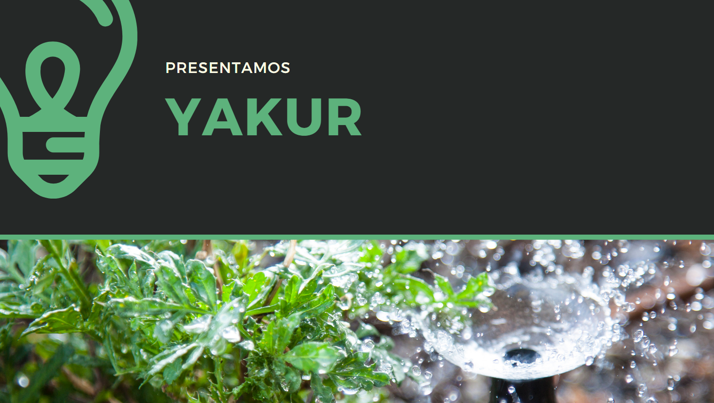

PROGRAMACIÓN Y CIRCUITO TERMINADOS
En la semana 14, completamos la programación y el ensamblaje del circuito. El sistema de riego ya respondía correctamente a los sensores de humedad y activaba la bomba de agua cuando era necesario. Esta fue una de las semanas más satisfactorias, ya que todo el trabajo previo en el código y en la construcción del circuito comenzó a dar sus frutos. El sistema ahora podía realizar su función de forma automática y eficiente, activando el riego solo cuando los sensores indicaban que el suelo estaba seco.
Durante esta semana también realizamos pruebas internas para asegurarnos de que el sistema respondiera de acuerdo a lo planeado. El sistema de riego ya estaba completamente funcional y respondía correctamente a las mediciones de los sensores, activando y desactivando la bomba según lo esperado. Sin embargo, aún quedaban algunos detalles por optimizar, como la personalización del riego dependiendo del tipo de planta y la integración de una interfaz de usuario más amigable.
Avances y Próximos Pasos
Al final de la semana, el prototipo estaba completamente operativo. Sin embargo, aún necesitábamos realizar algunos ajustes finos para optimizar el consumo de agua y mejorar la interfaz de usuario para que fuera más fácil de usar. Aunque el sistema ya era funcional, nos enfocamos en realizar pruebas de campo para comprobar que el riego fuera efectivo y eficiente en diferentes condiciones de humedad y tipos de plantas. Los próximos pasos incluyen ajustes de calibración y pruebas reales en el entorno de los usuarios.